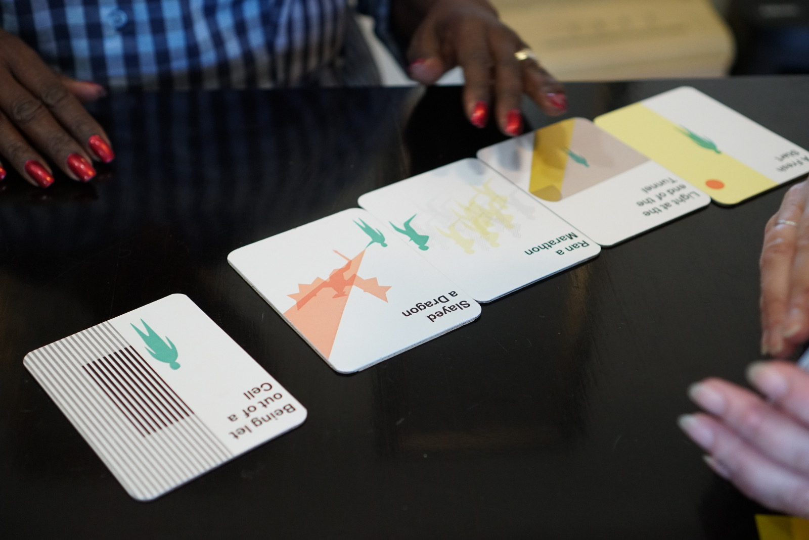
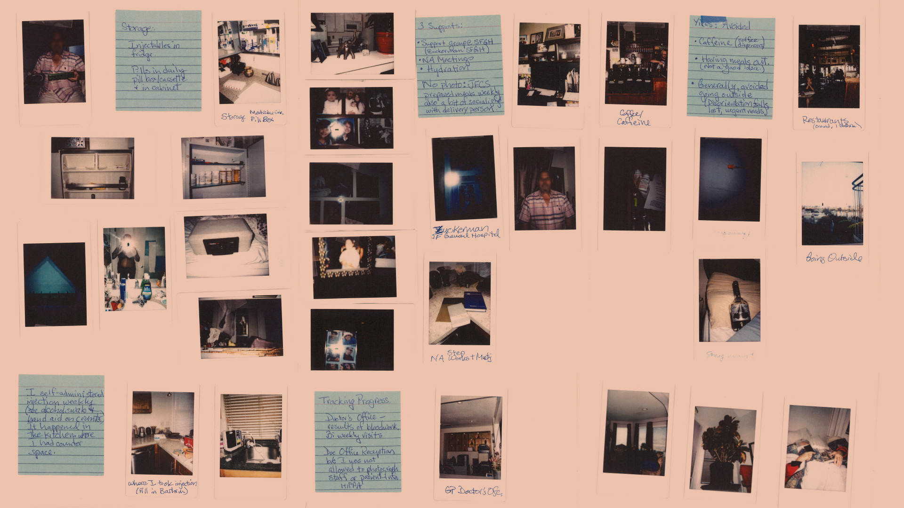

Designing an innovative patient-centred experience for a health tech pioneer
Partner
Proteus Digital Health
Locations
London, San Francisco
Challenge
Rethink the experience of Proteus to help injecting drug users with Hepatitis C
Outcome
A comprehensive patient experience including rituals for pill and patch-wear, data-informed features for the Discover app and algorithmic outreach tools for customer support for three Hep C user segments
Background
Proteus Digital Health is a company based in Redwood, California commercialising a new category of therapy: digital medicines. They have patented a sand-grain sized ingestible sensor to accompany pharmacological medicine. When this sensor reaches a patients stomach, it sends a signal to a patch worn on the patient’s torso. This patch keeps track of medication intake, steps, body angle and communicates the same to a patient app and the provider.
The Proteus design team were looking to rethink the current experience of Proteus with a focus on Hepatitis C patients. According to the Center for Disease Control (CDC), an estimated 2.7 million people in the United States have chronic Hepatitis C infection. Until recently, treatment for HCV involved taking medications like Interferon and Ribavarin with long term side effects for up to one year. Now safer, shorter highly effective and more tolerable tablets like Harvoni and Epculsa have revolutionised treatment.
We interviewed participants from Tenderloin Health Services, based at the GLIDE church
Injection drug use remains the most common risk factor for acquiring HCV in the United States, accounting for more than 50% of all cases of HCV. While a large mass of the HCV population are Baby Boomers, the growing segment are post-Millennials tied to the opioid epidemic.
Designing with Extreme Users and Data
We wanted to interview a generational mix of patients who were currently infected or recently cured from Hepatitis C about their experiences with virus and the medication treatments.
Card selection exercise with a participant
Half of the patients we recruited were baby boomers and other half millennials , each patient had multiple risk factors for non-adherence to medication like active substance abuse/ hospitalization within past 2 years for a psychiatric comorbidity. Two were recently cured young mothers, one was a recently cured grandmother with 2 pet lizards, another a survivor of the full blown AIDS era, one currently undergoing treatment in a men only rehab facility, four were part of AA/NA, eight had gotten infected when homeless.
We developed a collection of tools and tasks intended to make the patient think and recollect their experiences with Hep C, share memories of objects which helped them stay on track with their treatment, stories of high and low points in their journey towards ‘sustained viral load’ or being cured and people who helped them along the way. Our conversations revealed insights about differences in the generational experience of Hepatitis C.
A picture diary of a participant
We were also able to recruit a patient who had been part of the initial Proteus Harvoni clinical trial, and learn about her experience of Proteus beyond the numbers. Finally, data from 60 + Hep C patients was analysed for patterns in adherence and customer support moments.
This methodology resulted in rich insights and lead to the development of three patient experience journeys based on behavioural segments. Due to a strict non disclosure agreement, we are unable to share the journeys and recommendations themselves, but we hope to see them being turned into features and services which accompany the Proteus offering.
Shruti, amazing work on the Hep C research. As Brian Chesky says, 10 stars. Love the deliverables, output and the approach. Definitely something we’ll pull from as we look to oncology and how to incorporate the learnings into the discover suite.
With the new experience we think Proteus can fit seamlessly into lives of both millennial and baby boomer Hep C patients who are trying to slay the dragon and offer them support and guidance on their journey.